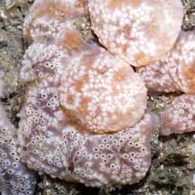
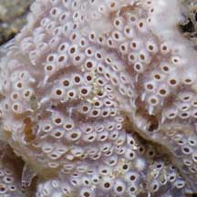
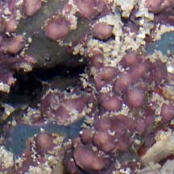
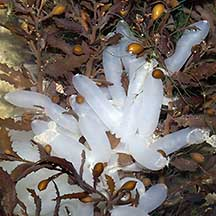
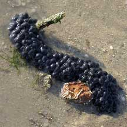

|
|
| Blob-like
lifeforms: sponges, ascidians and encrusting algae How to tell them apart? updated Apr 2020 These kinds of lifeforms are often mistaken for one another. They take on various blob-like or other irregular shapes. And are often quite colourful. |
|
  |
 
|
  |
| Colonial ascidians are smooth and slimy. | Sponges tend to be rough, although some are smooth. | Tends to be smooth, taking on the shape of whatever it is encrusting. Sometimes appears branch-like or knobbly when covering dead corals. |
| Colonial ascidians tend to 'collapse' when exposed out of water. They inflate again once they are submerged. | Sponges don't 'collapse' when exposed out of water and most retain their rigid shape. | Coralline algae doesn't 'collapse' when exposed out of water. |
| Colonial ascidians tend to have many tiny holes of the same size, although some may have a few large holes. | Sponges usually a few larger holes, with tiny holes over the rest of the body. | Coralline algae doesn't have holes. |
| Colonial ascidians are complex animals belonging to Phylum Chordata, Class Ascidiacea. | Sponges are simple animals belonging to Phylum Porifera. | Coralline algae are seaweeds. |
| More comparisons |


|
 These white cylinders are the egg capsules of a cephalopod (squid, cuttlefish or octopus). |
 This string of black blobs are the egg capsules of a cephalopod (squid, cuttlefish or octopus). |